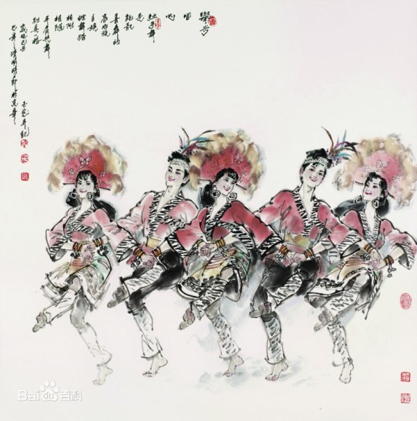

- 民族简介
- 文化习俗
- 历史发展
- 旅游介绍
高山族
高山族 高山族是中国台湾地区南岛语系各族群的一个统称。2008年，总人口为494107人。 高山族主要居住在中国台湾省，也有少数散居在福建、浙江省等沿海地区。高山族聚居地区主要在台湾中部山区、东部纵谷平原和兰屿岛上。 高山族以稻作农耕经济为主，以渔猎生产为辅。高山族的手工工艺主要有纺织、竹编、藤编、刳木、雕刻、削竹和制陶等。 高山族有自己的语言，属南岛语系印度尼西亚语族，大体可分为泰雅、邹、排湾三种语群。没有本民族文字，散居于大陆的高山族通用汉语。居住在台湾的高山族同胞有自己独特的文化艺术，他们口头文学很丰富，有神话、传说和民歌等。
族称
高山族是中国台湾南岛语系各族群的统称，指台湾岛及其附属岛屿上汉族及其他大陆民族以外的“中华民族”人口，范围大概相当于历史上汉族所谓“生番”，日本殖民当局所谓“蕃人”、“高砂族”，或当前台湾当局法律上“山地原住民”和“平地原住民”的总和。">
信仰
高山族还保留有原始宗教的信仰和仪式。他们崇拜精灵，各地信仰的神不一，有天神、创造宇宙之神、自然神、司理神和其他精灵妖怪。祭仪有农事祭(包括开垦祭、播种祭、除草祭、收刈祭、新谷入仓祭等，主要的是粟祭)、狩猎祭、渔祭、祖灵祭等。盛行巫术，其中卜占方法有鸟卜、梦卜、水占、竹占、瓢占、饭占等，并有多种形式的巫书。由于汉族移民和荷兰、西班牙殖民者的影响，高山族宗教信仰复杂。汉族带去了佛教、西方传教士带去了基督教、天主教等。这几种宗教都在高山族群众中生根，高山族宗教生活中形成原始宗教信仰、佛教和西方宗教等交错并立的局面。
建筑
高山族过去是依山傍水，巢居穴处，或辟竹编茅，架木为屋。住宅类型有木屋、竹屋、茅屋、板岩石屋、草顶地下房屋等，但十分讲究造型和实用相结合。大都呈长方形或四方形，有门无窗 。
服饰
高山族传统衣饰绚丽多彩，衣饰式样因族群而异。
高山族男子的衣饰式样，大体有四种类型：一是以泰雅人、赛夏人和北部阿美人为代表的北部型。其特征是用两幅麻布拼缝成无袖筒外褂；二是以曹人和布农人为代表的中部型。其特征是以鹿皮为衣料，上衣为带毛的鹿皮背心，外披鹿皮披肩；三是以排湾人、卑南人、鲁凯人和南部阿美人为代表的南部型。其特征是对襟长袖上衣，腰部系半腰裙，或系一条宽腰带而垂其两端作为前裙；四是兰屿岛上雅美人的雅美型。仅系一条用宽约三四寸的厚布做成丁字带遮挡下身。
高山族女子衣饰类型包括短衣长裙和长衣短裳。大体有三种类型：一是泰雅人、赛夏人、曹人和阿美人的短衣长裙式；二是布农、鲁凯人和排湾人的窄袖长衣式；三是雅美人的半裸露式。上身常常只穿一件背心，下体仅横围一块腰布。冬季则用一块方布自左肩围裹其身，于左肩上打结。
高山族的饮食以谷类和根茎类为主，一般以粟、稻、薯、芋为常吃食物，配以杂粮、野菜、猎物。山区以粟、旱稻为主粮、平原以水稻为主粮。除雅美人和布农人之外，其他几个族群都以稻米为日常主食，以薯类和杂粮为主食的补充。居住在兰屿的雅美人以芋头、小米和鱼为主食，布农人以小米、玉米和薯类（当地称地瓜）为主食。平埔人还特产香米、喜食“百草膏”（鹿肠内草浆伴上盐即食）。昔日饮食皆蹲踞生食，饮食、烹饪、享用十分考究。高山族嗜烟酒、食嚼槟榔。
历史
在台湾出土的新石器时代的文物，与中国福建的新石器文物关系密切，台湾人主要的应是从中国大陆迁移过去的。
高山族过去长期处于原始社会发展阶段。据史载，三国时期，高山族的先民分成若干部落，部落成员称为“弥麟”，公共事务由部落成员共同管理。他们使用石斧、石锛、石环、用鹿角为矛，用青石为镞，以采集、狩猎为主，畜牧业尚不发达。盛行男嫁女家的婚姻制度，大约尚处在母系氏族社会阶段。至7世纪，已有了农耕、畜牧，生产工具仍以石器为主，有少量铁器。部落有酋长，无赋税，公共事务仍由部落成员管理，有人犯罪，由部落成员根据习惯法共同议决制裁办法，轻者杖责，重则处死。无文字，不知历法，崇拜山神、海神。集会时多举行歌舞。已有雕刻与绘画。历北宋、南宋、元朝、明、清代各代，台湾与内地的联系日益增多。据陈第《东番志》等书记载，当时高山族的农业、畜牧业和狩猎，虽较以前有了进一步发展，且已有部分特产与大陆沿海居民进行贸易，大陆人以玛瑙、瓷器、布、盐、铜、簪环之类易高山族的鹿脯、鹿皮、鹿角等，但各部落之间依然“老死不与他夷相往来”，仍过着原始的生活。
从16世纪开始，台湾高山族多次遭受外国侵略。1563年，倭寇侵入北部鸡笼(基隆)一带烧杀抢掠，当地高山族被迫迁居山区。以后又有荷兰殖民者、西班牙殖民者、美日侵略者侵略台湾，高山族人民给予了坚决抵抗，开展了英勇顽强，不屈不挠的斗争，表现出了誓死保卫家园的爱国主义情操。
17世纪以后，由于大量汉族迁居台湾，以及郑成功政权采取有利于发展高山族经济文化的一系列措施，加速了高山族社会经济发展。居住在西南部平原的高山族，有一部分发展进入封建社会。 [5] 长期以来高山族和汉族人民共同抵御外国侵略者的侵略，共同开发了台湾。在日本帝国主义侵占台湾50年间，反抗斗争尤为激烈，以1930年的雾社起义规模最大。1947年又参加了以汉族为主的“二二八”起义。
高山族风情园
华安是一个多民族的县份，有高山族、畲族等多个民族，是高山族同胞居住在祖国大陆最多、最集中的县份。高山族有自己的语言（没有文字）、风情习俗和生活习惯。他们勤劳勇敢、能歌善舞、热情为客，充分显示本民族的才智、灵气及其生活哲学，创造了丰富多彩的民族文化。高山族同胞对舞蹈情有独钟，每逢祭祀或节日必举行舞会，并表演精彩、内容丰富、风格多样，趣味性和游客参与性强，具有较高的娱乐和欣赏价值。为弘扬少数民族文化、拉近两岸亲情以及拓展我县特色旅游，县旅游局于1999年动工兴建华安民俗风情园，占地100亩，第一期工程已投资近一百万元兴建了高山族村寨。现寨内建有工作室、起居室、表演场、观赏台、了望塔等，配套兴建了餐厅、茶座、卡拉OK厅以及儿童游乐设施。今后，民俗风情园计划投资千万元，将它开辟成为一个具有浓郁地方特色、文化含量大，集观赏性、娱乐性、参与性为一体的综合旅游文化景区。
华安是祖国大陆高山族同胞人口聚居最多、最集中的县份。这里有一支由高山族青年自发组成的高山族风情歌舞表演队，其歌舞热情奔放，生活气息浓厚，服饰华丽精美，深为人们喜爱。歌舞的突出特点是以歌伴舞。当您来到华安，走进高山族民俗风情园，高山族青年为你表演的连臂踏歌、甩发舞、杵舞以及陀螺竹杆舞等歌舞，一定让你如痴如醉。
高山族舞蹈的动作比较简单，节奏特别鲜明，具有明显的原始舞蹈风格。早期的台湾高山族舞蹈，往往都是以熊熊篝火为中心，群集饮酒，酒酣则歌舞并作，众多舞蹈者携手围成圆圈，边舞边唱，显示族群团结的力量，展现人们快乐的心情，舞蹈动作通常都是有节奏地跺脚、跳跃、摇身、摆手等。
高山族人将内心的喜悦全部倾注在歌舞之中，内在节奏体现于外部形体动作上，形成一种颤动的舞蹈律动特征，结实有力，具有一种天真烂漫、热情奔放的动人美感。